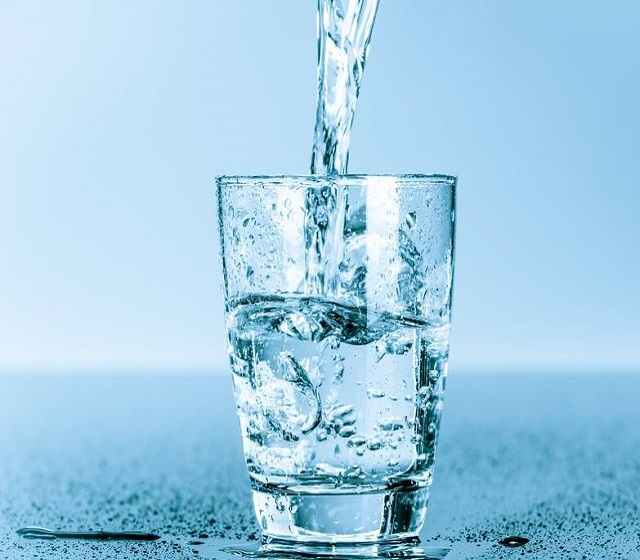

We all need water to survive, but how exactly does it help?
By Akritidis Georgios Martch 17, 2020
Did you know that your body weight is approximately 60 percent water? Your body uses water in all its cells, organs, and tissues to help regulate its temperature and maintain other bodily functions. Because your body loses water through breathing, sweating, and digestion, it's important to rehydrate by drinking fluids and eating foods that contain water. The amount of water you need depends on a variety of factors, including the climate you live in, how physically active you are, and whether you're experiencing an illness or have any other health problems.
Water Protects Your Tissues, Spinal Cord, and Joints
Water does more than just quench your thirst and regulate your body's temperature; it also keeps the tissues in your body moist. You know how it feels when your eyes, nose, or mouth gets dry? Keeping your body hydrated helps it retain optimum levels of moisture in these sensitive areas, as well as in the blood, bones, and the brain. In addition, water helps protect the spinal cord, and it acts as a lubricant and cushion for your joints.
Water Helps Your Body Remove Waste
Adequate water intake enables your body to excrete waste through perspiration, urination, and defecation. The kidneys and liver use it to help flush out waste, as do your intestines. Water can also keep you from getting constipated by softening your stools and helping move the food you've eaten through your intestinal tract. However, it should be noted that there is no evidence to prove that increasing your fluid intake will cure constipation.
Water Aids in Digestion
Digestion starts with saliva, the basis of which is water. Digestion relies on enzymes that are found in saliva to help break down food and liquid and to dissolve minerals and other nutrients. Proper digestion makes minerals and nutrients more accessible to the body. Water is also necessary to help you digest soluble fiber. With the help of water, this fiber dissolves easily and benefits your bowel health by making well-formed, soft stools that are easy to pass.
Water Prevents You From Becoming Dehydrated
Your body loses fluids when you engage in vigorous exercise, sweat in high heat, or come down with a fever or contract an illness that causes vomiting or diarrhea. If you're losing fluids for any of these reasons, it's important to increase your fluid intake so that you can restore your body's natural hydration levels. Your doctor may also recommend that you drink more fluids to help treat other health conditions, like bladder infections and urinary tract stones. If you're pregnant or nursing, you may want to consult with your physician about your fluid intake because your body will be using more fluids than usual, especially if you're breastfeeding.
How Much Water Do You Need?
There's no hard and fast rule, and many individuals meet their daily hydration needs by simply drinking water when they're thirsty, according to a report on nutrient recommendations from the Institute of Medicine of the National Academies. In fact, most people who are in good physical health get enough fluids by drinking water and other beverages when they're thirsty, and also by drinking a beverage with each of their meals, according to the Centers for Disease Control and Prevention. If you're not sure about your hydration level, look at your urine. If it's clear, you're in good shape. If it's dark, you're probably dehydrated.